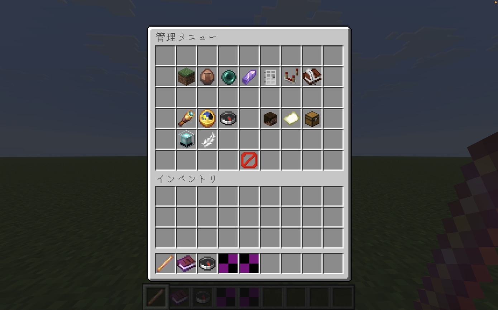
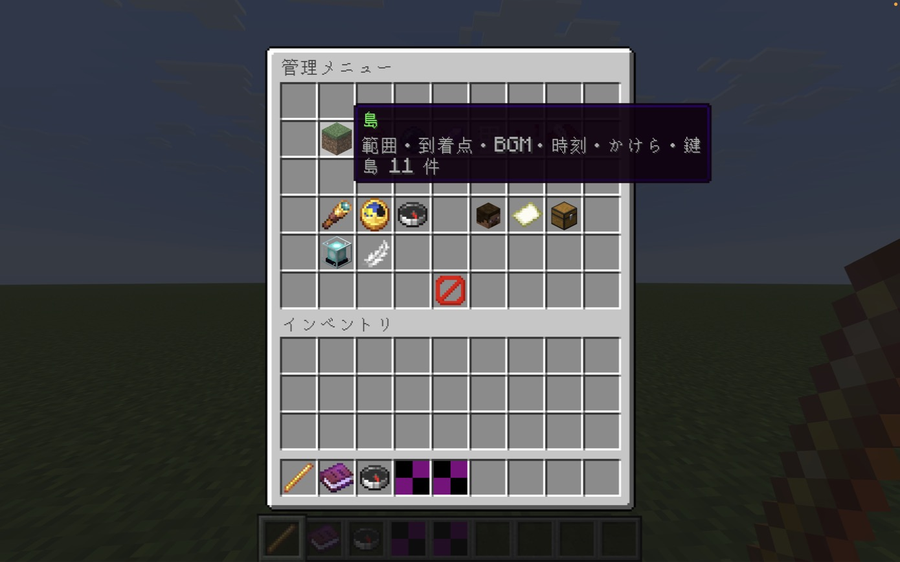
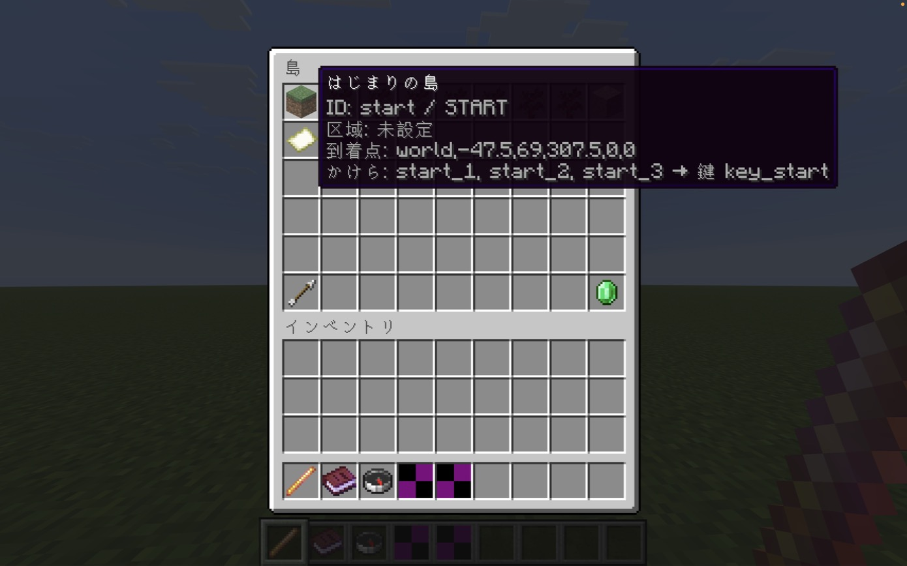
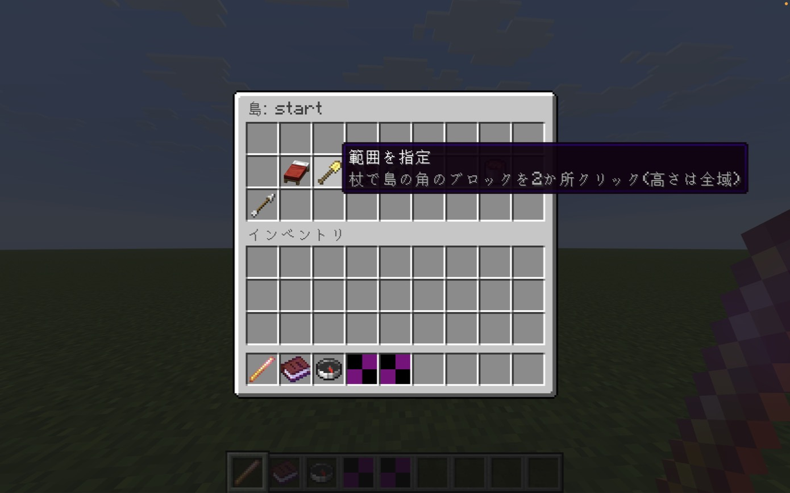
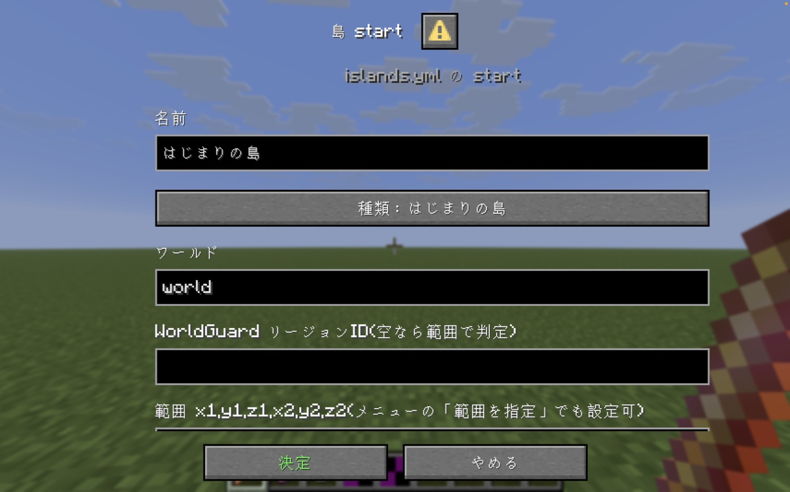
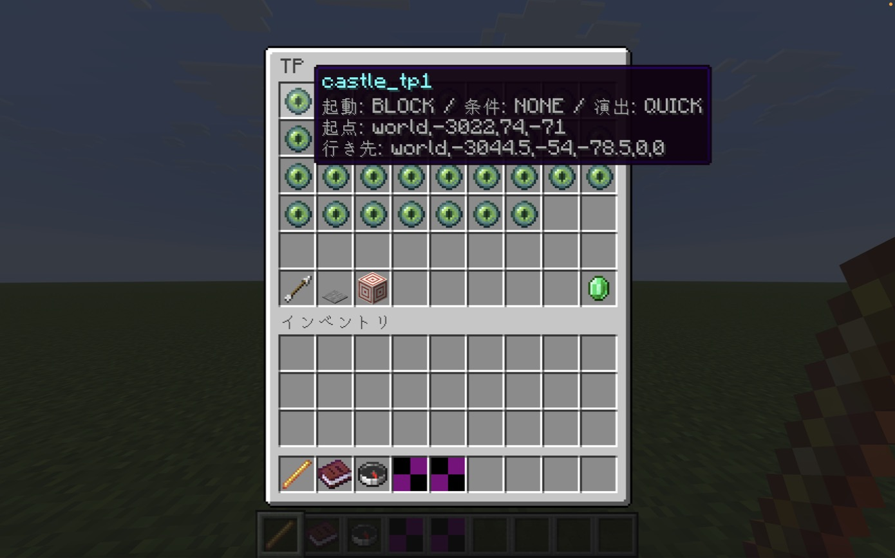
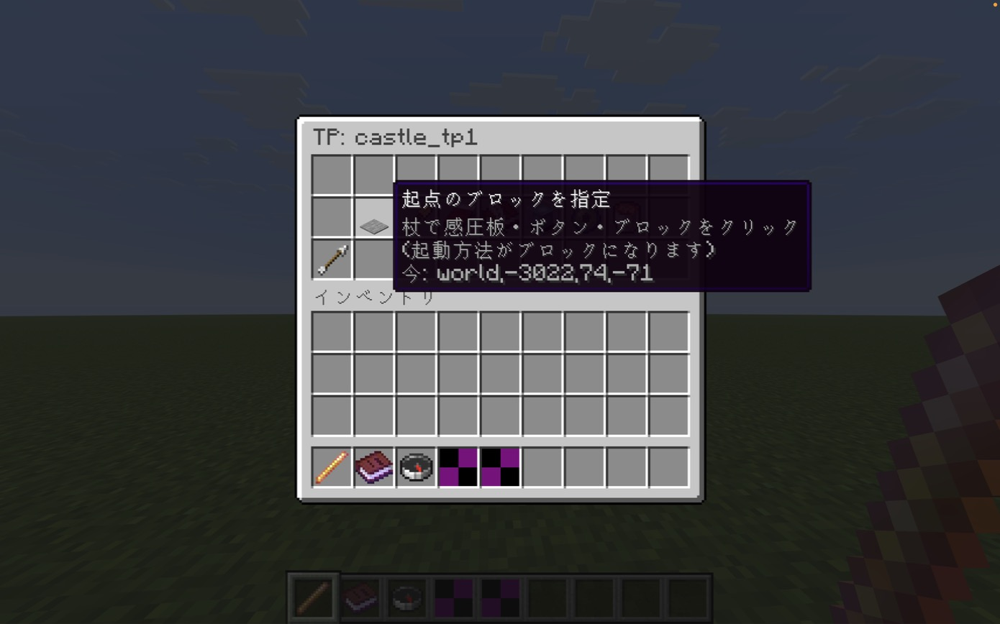
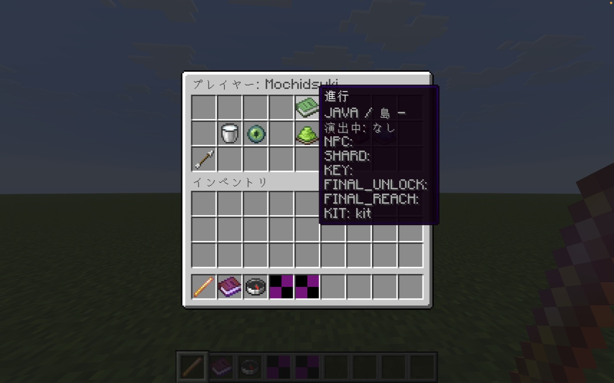
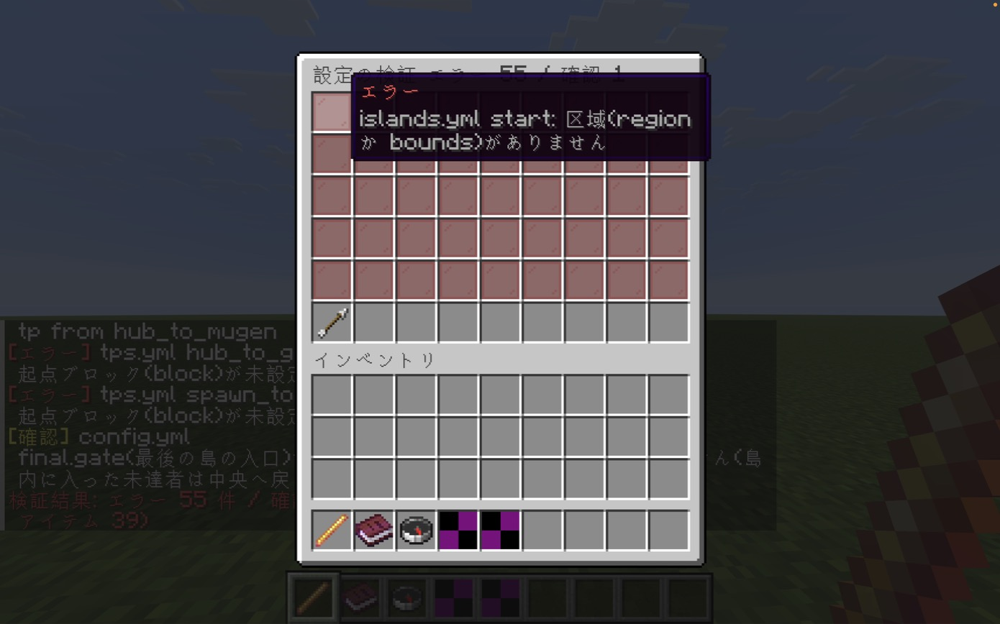

権限
メニューに出るボタンは、持っている権限によって変わります。
| 権限 | 対象 | できること |
|---|---|---|
keytour.setup | 設定担当 | 島・NPC・TP・アイテム・最後の島の入口・全体設定・文言・設定の検証・読み直し・この場所の情報 |
keytour.staff | 当日スタッフ | プレイヤーの進行の照会、演出の解除（中央へ戻す）、プレイヤーのところへ移動 |
keytour.admin | 管理者 | 進行の付与・取消・初期化、集計からの除外、データ出力、バックアップ、演出の試験 |
管理の杖
keytour.setup か keytour.staff を持つ人には、ログインすると光るブレイズロッド「管理の杖」が自動で渡されます。権限のない人が持っていた場合は回収されます。
右クリック
空中・ブロック・エンティティのどれに向けても、管理メニューが開きます。
ブロック／NPCの指定
メニューで「指定」を選ぶとメニューが閉じ、アクションバーに「杖で指定: …」と出ます。その状態で対象を右クリックします。
指定をやめる
しゃがんで右クリックすると、指定をやめます。


島・NPC・TP・アイテムの設定
4つとも同じ流れで操作します。一覧から項目を選ぶと詳細メニューが開き、右下の「新しく作る」（エメラルド）でIDを入力して追加できます。「編集」はダイアログで開き、決定すると保存と読み直しが一度に行われます。
🏝 島
- 到着点を現在地に
- 範囲を指定（杖で2点）
- 編集: 名前・種類・リージョン・時刻・BGM・かけら・鍵
- 到着点へ移動／消す
🧑 NPC
- NPCを指定して紐付け（村人・防具立て・Citizens など）
- コンパスの目標を現在地に
- 編集: 名前・所属島・渡すかけら・台詞・会話後のTP
- 一覧画面で「台帳どおりに一括配置」「置いたNPCを撤去」
🌀 TP
- 起点のブロックを指定（感圧板・ボタンなど）
- 区域を指定（杖で2点）
- 行き先を現在地に
- 編集: 起動方法・入場条件・演出・時刻・SE
- 自分で試す（条件も参加者と同じ）
- 一覧画面で「起点ブロックの点検」「起点を近くの感圧板に合わせる」
💎 アイテム
- 編集: 種類・基礎アイテム・モデル・名前・説明・速度・本のページ
- 試験用に受け取る（進行には記録されず、再ログインで回収）





はじめて設定するときの流れ
- 「島」で各島の範囲と到着点を決める。
- 「アイテム」でかけら・鍵の名前と見た目を整える。
- 「NPC」で一括配置するか、既存のエンティティを杖で紐付ける。
- 「TP」で起点と行き先を決め、「自分で試す」で確かめる。
- 「最後の島の入口」で範囲と開放の条件を決める。
- 「設定の検証」で赤がなくなるまで直す。
最後の島の入口
- 入口の範囲を指定 — 杖で角を2か所。ここに入った瞬間に開放の条件を判定します。
- 押し戻す位置を現在地に — 条件を満たさない人を戻す位置（未設定なら中央の到着点）。
- 開放の条件・入口を編集 — 必要な鍵の数・現物の所持・リージョン。
プレイヤー対応
「プレイヤー」からオンラインの参加者を選ぶと、上部の本アイコンに進行（会話・かけら・鍵など）が表示されます。
演出を解除して中央へstaff
動けない・暗いままなどのときに。演出を止め、移動制限・暗転・無音を解除して中央へ移動します。
そのプレイヤーのところへstaff
相手の位置へテレポートします。
付与／取消admin
会話済みNPC・かけら・鍵・最後の島の開放／到達・初回配布済みを付与、または取り消します。取消時、かけら・鍵は現物も回収します。
進行を初期化admin
会話・かけら・鍵・開放・到達・配布をすべて消します。行動記録は残ります。元に戻せません。
集計から除外admin
運営・試験アカウントは除外してください。

運営の道具
データ出力
行動データを9項目のCSVで出力します。
バックアップ
サーバーを止めずに、進行と行動記録をコピーします。
演出の試験
自分を30ブロック先へTPさせて演出を確認します。
困ったとき
杖がない
権限があるか確認して、ログインし直してください。自動で渡されます。
メニューが開かず「杖で指定」と出る
指定待ちになっています。しゃがんで右クリックで解除できます。
YAMLを直接書き換えた
管理メニューの「読み直し」を押してください。
どこかが動かない
まず「設定の検証」を開き、赤い項目から直してください。
